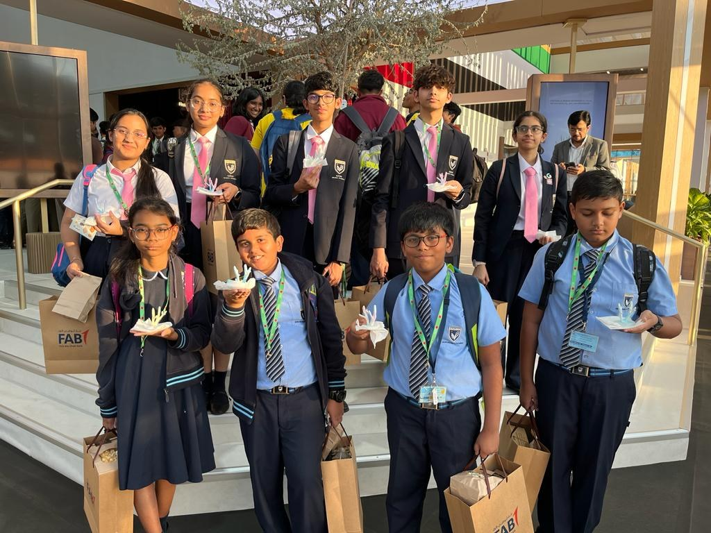
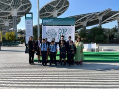
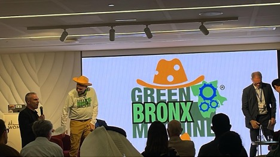
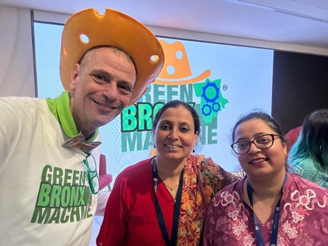

Expo City Farm
We go to the farm to see how they are preserving lush vegetation and growth for our city. Discovering a chemical-free diet, a greenhouse gas-free supply of food, sustainable agriculture, and community growth.
First, we went to the Empowering Youth and Communities for a Sustainable Future workshop, which was led by Sara Harb, Lana Abu Qulbain, and Ibrahim Kronfol. We began by discussing the MENA Green Schools Initiative's awareness and the next steps that it will take. Speaking of which, the publication of Farah Naz's children's book, Net Zero, about climate change
Later, we took part in an activity where we were tasked with cooling the house without using an air conditioner. We were split into groups, and the goal of the task was to do so while staying within a $4000 budget.
We were given an infrared lamp and a house with a temperature sensor inside. As part of the workshop, we were to record the temperature of the house both before and after we house proofed it for three minutes.
There was a 12.1 percent increase in heat from the starting temperature of 32.1 degrees Celsius to the final temperature of 44.2 degrees Celsius.
The next step was to choose the materials to help our team reduce heat energy. We chose roof proofing, which lowers internal temperature by preventing heat from the outside from entering and trapping it inside the walls, and wall insulation, which lowers internal temperature by maintaining a lower temperature. as well as a shade tree to keep the sun off.
The temperature then rises by 2.1 percent from the initial reading of 32.1 degrees Celsius to the final reading of 34.2 degrees Celsius.
We discuss house proofing in more detail and give participation certificates as the workshop comes to an end.
After that, we were given a tour of the outdoor organic farm, which produces all-organic food for people as well as animals. Numerous types, including barley, oats, millet, and alfalfa, can be kept and fed to animals. Other types protect the soil from minerals and provide ground cover.
We also had the opportunity to visit the Indoor Hydroponics Farm, which uses cutting-edge technology to offer efficient and sustainable methods to the farming industry. With the least amount of water and labor required, as well as the least amount of negative environmental effects, their systems can grow produce of the highest quality in the most effective manner.
The Biochar Plot, which is a unique organic waste consisting of wood that is burned without oxygen to retain carbon, was the next place we visited. It creates a material that resembles charcoal, which aids in soil moisture retention and boosts crop production.
The innovative local mushroom farm, which is committed to sustainability, was the next place we visited. Used as a mushroom germination ground using invested coffee grounds from restaurants in and around Expo City. With a priority on utilizing nutrients and reducing water usage, their goal is to offer a sustainable source of food. The farm grows a variety of tempting mushrooms with minimal water use and uses materials from nearby crops. It produces three different kinds of oyster, chestnut, and lion's mane mushrooms.
Lastly, joule technology, which draws water from the atmosphere by absorbing it and then pressing it out, is the most recent one that we learned about. Solar batteries provide the machine's power. Working in both humid and arid environments
The visit to Expo Farm City brought to light the importance of youth leadership, easy ways to cut back on energy use, organic farming, state-of-the-art agricultural machinery, creative ways to repurpose waste, and sustainable farming methods for a safe and healthy environment. I've learned so much, and I can't wait to come back here.
- Kunjal Gawli 9D
2.Let's observe what happens to corals under high temperatures!
4 students of Grade 5 visited the Climate Finance hub at the COP 28 - Green zone on Thursday, Dec 7th. They joined their seniors from IB 1 and students from the Millennium cluster of schools for a workshop organized by FAB in collaboration with the Hongkong based environment technology start up - Archi reef.
Marine biologist and chief scientist of Archi reef, Dr. David Baker, engaged the students with a discussion on coral reefs, their structure and importance. The students made connections with our Gr 5 Biodiversity unit that was launched recently. They took part in creating a heat sensitive 3 D printed model to demonstrate the effect of warm waters on coral bleaching.
3. A talk by Stephen Ritz : The Green Bronx Machine



